司徒改造掌機的目的就是希望這台掌機可以更趨完美，而第一個改造的東西通常是屏幕，因為屏幕算是最直覺的第一影響因素，好不好只要一開機就可以知道，因此，司徒第一任務就是更換屏幕，而原本的屏幕解析度是320x240，司徒打算更換成更高解析度的屏幕，這樣的話，至少DOSBox可以顯示更精細的遊戲內容，因此，司徒從淘寶購買一片IPS 3.5" 640x480解析度的屏幕(RGB介面)，如下所示：
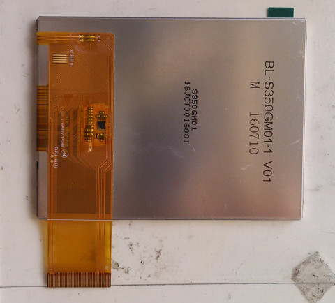
config PANEL_HX8363A
# TODO: Switch to tristate once the driver is a module.
bool "HX8363A based panel"
help
Select this if you are using a HX8363A LCD driver IC.
drivers/video/displays/Makefile
obj-$(CONFIG_PANEL_HX8363A) += panel-hx8363a.o
drivers/video/displays/panel-hx8363a.c
#include <linux/delay.h>
#include <linux/device.h>
#include <linux/gfp.h>
#include <linux/gpio.h>
#include <video/jzpanel.h>
#include <video/panel-hx8363a.h>
struct hx8363a {
struct hx8363a_platform_data *pdata;
};
static void hx8363a_send_cmd(struct hx8363a_platform_data *pdata, u8 data)
{
int bit;
gpio_direction_output(pdata->gpio_enable, 0);
gpio_direction_output(pdata->gpio_clock, 0);
gpio_direction_output(pdata->gpio_data, 0);
udelay(10);
gpio_direction_output(pdata->gpio_clock, 1);
udelay(10);
for (bit = 7; bit >= 0; bit--) {
gpio_direction_output(pdata->gpio_clock, 0);
gpio_direction_output(pdata->gpio_data, (data >> bit) & 1);
udelay(10);
gpio_direction_output(pdata->gpio_clock, 1);
udelay(10);
}
gpio_direction_output(pdata->gpio_enable, 1);
}
static void hx8363a_send_data(struct hx8363a_platform_data *pdata, u8 data)
{
int bit;
gpio_direction_output(pdata->gpio_enable, 0);
gpio_direction_output(pdata->gpio_clock, 0);
gpio_direction_output(pdata->gpio_data, 1);
udelay(10);
gpio_direction_output(pdata->gpio_clock, 1);
udelay(10);
for (bit = 7; bit >= 0; bit--) {
gpio_direction_output(pdata->gpio_clock, 0);
gpio_direction_output(pdata->gpio_data, (data >> bit) & 1);
udelay(10);
gpio_direction_output(pdata->gpio_clock, 1);
udelay(10);
}
gpio_direction_output(pdata->gpio_enable, 1);
}
static int hx8363a_panel_init(void **out_panel, struct device *dev, void *panel_pdata)
{
struct hx8363a_platform_data *pdata = panel_pdata;
struct hx8363a *panel;
int ret;
printk("%s++\n", __func__);
panel = devm_kzalloc(dev, sizeof(*panel), GFP_KERNEL);
if (!panel) {
dev_err(dev, "Failed to alloc panel data\n");
return -ENOMEM;
}
panel->pdata = pdata;
*out_panel = panel;
/* Reserve GPIO pins. */
ret = devm_gpio_request(dev, pdata->gpio_reset, "LCD panel reset");
if (ret) {
dev_err(dev,
"Failed to request LCD panel reset pin: %d\n", ret);
return ret;
}
ret = devm_gpio_request(dev, pdata->gpio_clock, "LCD 3-wire clock");
if (ret) {
dev_err(dev,
"Failed to request LCD panel 3-wire clock pin: %d\n",
ret);
return ret;
}
ret = devm_gpio_request(dev, pdata->gpio_enable, "LCD 3-wire enable");
if (ret) {
dev_err(dev,
"Failed to request LCD panel 3-wire enable pin: %d\n",
ret);
return ret;
}
ret = devm_gpio_request(dev, pdata->gpio_data, "LCD 3-wire data");
if (ret) {
dev_err(dev,
"Failed to request LCD panel 3-wire data pin: %d\n",
ret);
return ret;
}
/* Set initial GPIO pin directions and value. */
gpio_direction_output(pdata->gpio_clock, 1);
gpio_direction_output(pdata->gpio_enable, 1);
gpio_direction_output(pdata->gpio_data, 0);
printk("%s--\n", __func__);
return 0;
}
static void hx8363a_panel_exit(void *panel)
{
}
static void hx8363a_panel_enable(void *panel)
{
struct hx8363a_platform_data *pdata = ((struct hx8363a *)panel)->pdata;
printk("%s++\n", __func__);
// Reset LCD panel
gpio_direction_output(pdata->gpio_reset, 0);
mdelay(50);
gpio_direction_output(pdata->gpio_reset, 1);
mdelay(50);
hx8363a_send_cmd(pdata, 0xB9);
hx8363a_send_data(pdata, 0xFF);
hx8363a_send_data(pdata, 0x83);
hx8363a_send_data(pdata, 0x63);
// Set_POWER
hx8363a_send_cmd(pdata, 0xB1);
hx8363a_send_data(pdata, 0x81);
hx8363a_send_data(pdata, 0x30);
hx8363a_send_data(pdata, 0x08); // 0x08
hx8363a_send_data(pdata, 0x36);
hx8363a_send_data(pdata, 0x01);
hx8363a_send_data(pdata, 0x13);
hx8363a_send_data(pdata, 0x10);
hx8363a_send_data(pdata, 0x10);
hx8363a_send_data(pdata, 0x35);
hx8363a_send_data(pdata, 0x3D);
hx8363a_send_data(pdata, 0x1A);
hx8363a_send_data(pdata, 0x1A);
// Set COLMOD
hx8363a_send_cmd(pdata, 0x3A);
hx8363a_send_data(pdata, 0x60); // 0x55
hx8363a_send_cmd(pdata, 0x36);
hx8363a_send_data(pdata, 0x0b); // 0x0a
hx8363a_send_cmd(pdata, 0xC0);
hx8363a_send_data(pdata, 0x41);
hx8363a_send_data(pdata, 0x19);
hx8363a_send_cmd(pdata, 0xBF);
hx8363a_send_data(pdata, 0x00);
hx8363a_send_data(pdata, 0x10);
// Set_RGBIF
hx8363a_send_cmd(pdata, 0xB3);
hx8363a_send_data(pdata, 0x01);
// Set_CYC
hx8363a_send_cmd(pdata, 0xB4);
hx8363a_send_data(pdata, 0x01); //01
hx8363a_send_data(pdata, 0x12);
hx8363a_send_data(pdata, 0x72); //72
hx8363a_send_data(pdata, 0x12); //12
hx8363a_send_data(pdata, 0x06); //06
hx8363a_send_data(pdata, 0x03); //03
hx8363a_send_data(pdata, 0x54); //54
hx8363a_send_data(pdata, 0x03); //03
hx8363a_send_data(pdata, 0x4e); //4e
hx8363a_send_data(pdata, 0x00);
hx8363a_send_data(pdata, 0x00);
// Set_VCOM
hx8363a_send_cmd(pdata, 0xB6);
hx8363a_send_data(pdata, 0x33); //33 //27
// Set_PANEL
hx8363a_send_cmd(pdata, 0xCC);
hx8363a_send_data(pdata, 0x02); //02
mdelay(120);
// Set Gamma 2.2
hx8363a_send_cmd(pdata, 0xE0);
hx8363a_send_data(pdata, 0x01);
hx8363a_send_data(pdata, 0x07);
hx8363a_send_data(pdata, 0x4C);
hx8363a_send_data(pdata, 0xB0);
hx8363a_send_data(pdata, 0x36);
hx8363a_send_data(pdata, 0x3F);
hx8363a_send_data(pdata, 0x06);
hx8363a_send_data(pdata, 0x49);
hx8363a_send_data(pdata, 0x51);
hx8363a_send_data(pdata, 0x96);
hx8363a_send_data(pdata, 0x18);
hx8363a_send_data(pdata, 0xD8);
hx8363a_send_data(pdata, 0x18);
hx8363a_send_data(pdata, 0x50);
hx8363a_send_data(pdata, 0x13);
hx8363a_send_data(pdata, 0x01);
hx8363a_send_data(pdata, 0x07);
hx8363a_send_data(pdata, 0x4C);
hx8363a_send_data(pdata, 0xB0);
hx8363a_send_data(pdata, 0x36);
hx8363a_send_data(pdata, 0x3F);
hx8363a_send_data(pdata, 0x06);
hx8363a_send_data(pdata, 0x49);
hx8363a_send_data(pdata, 0x51);
hx8363a_send_data(pdata, 0x96);
hx8363a_send_data(pdata, 0x18);
hx8363a_send_data(pdata, 0xD8);
hx8363a_send_data(pdata, 0x18);
hx8363a_send_data(pdata, 0x50);
hx8363a_send_data(pdata, 0x13);
mdelay(150);
hx8363a_send_cmd(pdata, 0x11);
mdelay(200);
hx8363a_send_cmd(pdata, 0x29);
printk("%s--\n", __func__);
}
static void hx8363a_panel_disable(void *panel)
{
struct hx8363a_platform_data *pdata = ((struct hx8363a *)panel)->pdata;
printk("%s++\n", __func__);
hx8363a_send_cmd(pdata, 0x10);
printk("%s--\n", __func__);
}
struct panel_ops hx8363a_panel_ops = {
.init = hx8363a_panel_init,
.exit = hx8363a_panel_exit,
.enable = hx8363a_panel_enable,
.disable = hx8363a_panel_disable,
};
menuconfig
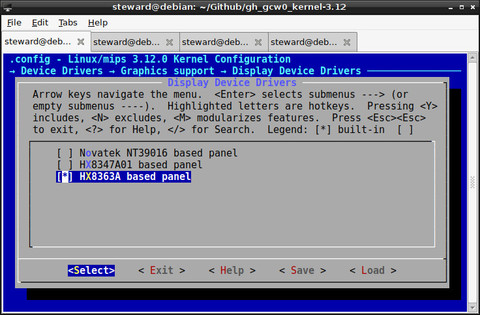
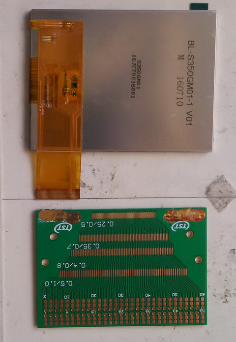
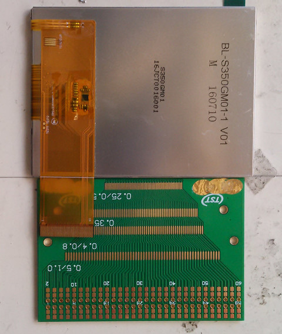
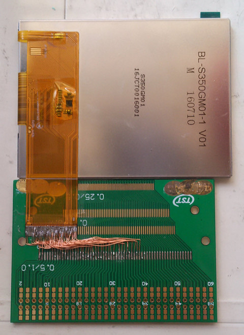
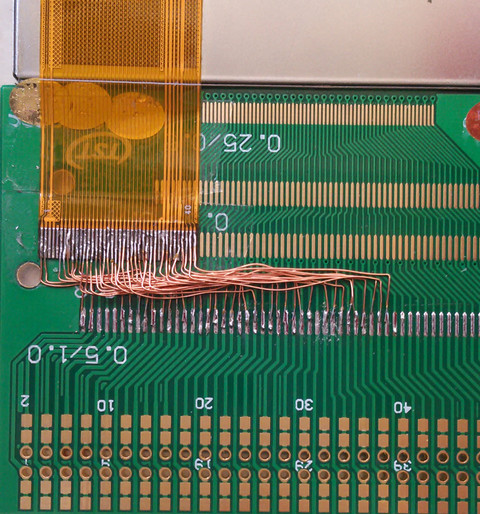
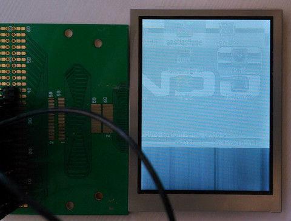
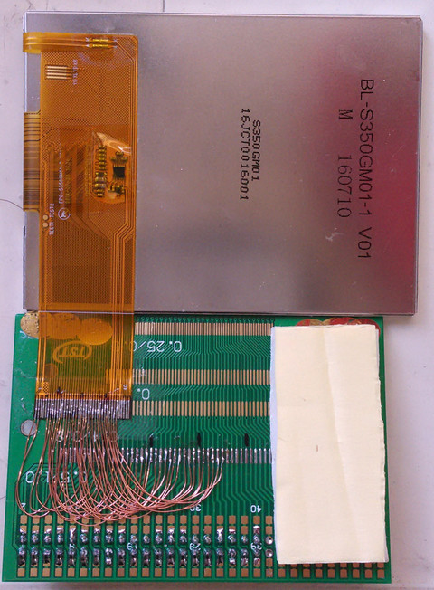
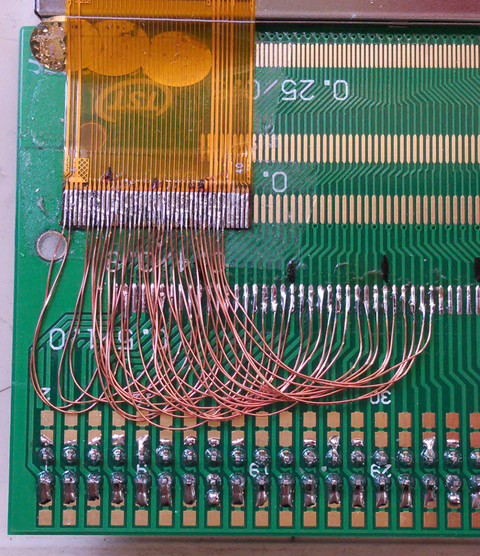
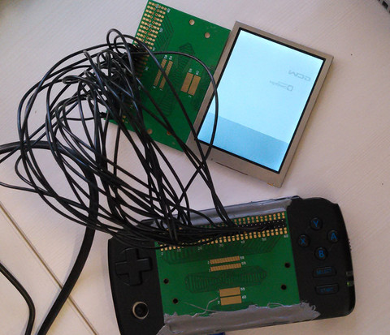
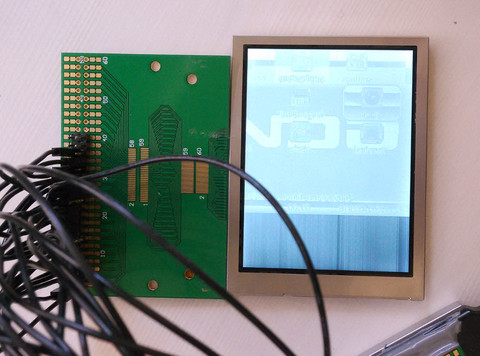
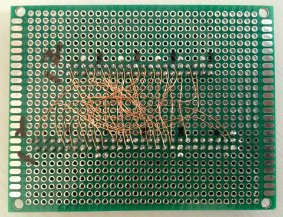
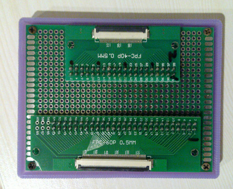
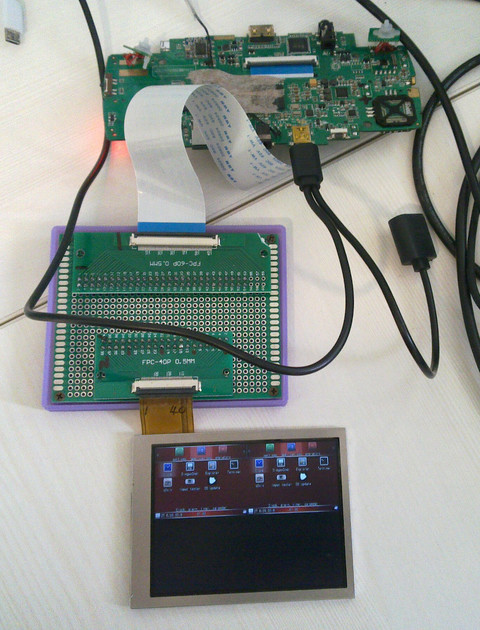
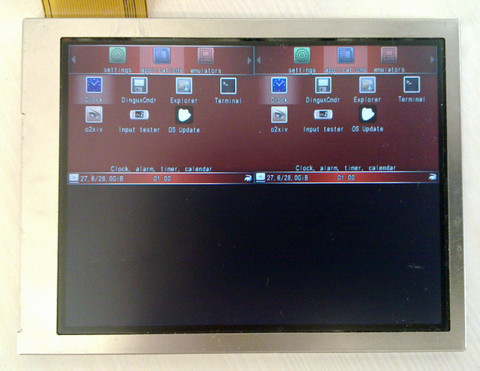
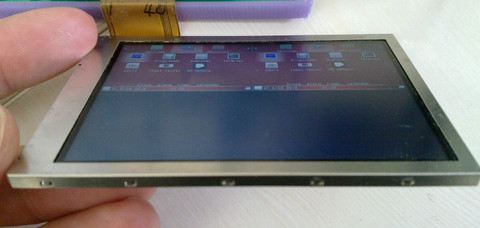
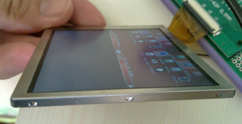
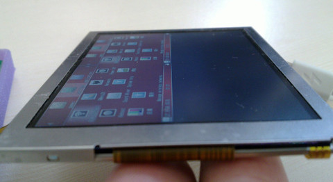
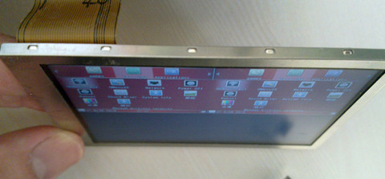